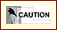

22.8. The /etc/mail/local-host-names file
: Please note that the /etc/mail/local-host-names file is for all type of configuration.
The /etc/mail/local-host-names file is read to obtain alternative names for the local host. One use for such a file might be to declare a list of hosts in your network for which the local host is acting as the MX recipient. On that machine we simply need to add the names of machines for which it i.e. mail.openna.com, will handle mail to /etc/mail/local-host-names. Here is an example:
Example 22-2. Alternative names
Create the local-host-names file, touch /etc/mail/local-host-names and add the following line:
# local-host-names - include all aliases for your machine here.
openna.com
deep.openna.com
www.openna.com
win.openna.com
mail.openna.com
|
|  |
Please be aware that if you configure your system to masquerade as another, any e-mail sent from your system to your system will be sent to the machine you are masquerading as. For example, in the above illustration, log files that are periodically sent to <root@www.openna.com> by the cron daemon of Linux would be sent to <root@mail.openna.com> our Mail Hub. |
22.8.1. Configure the /etc/sysconfig/sendmail file
The /etc/sysconfig/sendmail file is used to specify SENDMAIL configuration information, such as if sendmail should run as a daemon, if it should listen for mail or not, and how much time to wait before sending a warning if messages in the queue directory have not been delivered.
Create the sendmail file touch /etc/sysconfig/sendmail and add in this file:
DAEMON=yes |

- The DAEMON=yes option instructs Sendmail to run as a daemon. This line is useful when Sendmail client machines are configured to not accept mail directly from outside in favor of forwarding all local mail to a Central Hub, not running a daemon also improves security. If you have configured your server or client machines in this way, all you have to do is to replace the DAEMON=yes to DAEMON=no.

- Mail is usually placed into the queue because it could not be transmitted immediately. The QUEUE=1h sets the time interval before sends a warning to the sender if the messages has not been delivered.